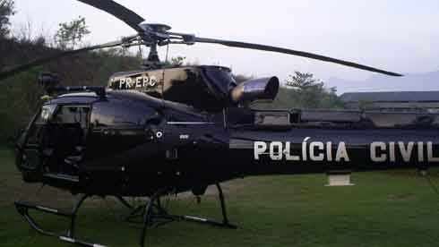

Todo mundo que gosta da Polícia (em geral as pessoas de bem), e todo mundo que gostaria de ser ou tem certeza que vai ser policial tem uma certa curiosidade sobre os bastidores das ações policiais. Eu também tinha, e a imaginação, baseada em cenas de cinema dita o ritmo.
Pensando nisso, aproveitei a Mega Operação Policial que realizar-se-ia nas favelas do Complexo do Alemão e peguei uma câmera emprestada para gravar alguns detalhes.
É certo que as imagens foram feitas somente em breves momentos em que este subscritor sentia-se em um local seguro, quando a área estava dominada e podia-se largar o fuzil para segurar a câmera. Mas a intenção não era mesmo fazer um filme de ação, e sim mostrar o que se passa por trás das notícias de jornais do dia seguinte.
Sociólogos e "poliçólogos" de plantão estão aproveitando o momento para estrelarem na tela da globo, foram diversos marginais mortos, e infelizmente alguns populares feridos. Não pode-se esperar outra coisa em meio a uma guerra civil, e pela quantidade de tiros disparados para impedir o avanço das equipes policiais, acho até que foram poucos inocentes feridos. A nota triste fica por conta do colega da CORE que foi ferido por um disparo de fuzil. Para nossa sorte o disparo atingiu no bolso do colete onde ele levava dois carregadores de fuzil, o que ajudou bastante a diminuir o impacto da munição. Ele passa bem e não corre risco.
Não vou me estender sobre os resultados da operação, a imprensa já publicou tudo e mais um pouco do que aconteceu, e até inventou bastante coisa por conta própria.
Então fica aí para vocês algumas imagens dos bastidores, veja o vídeo da operação policial. A idéia foi mostrar desde a saída de casa, às 04:30 da manhã até o final da operação. Não reparem na edição do vídeo por dois motivos: primeiro que eu estou aprendendo a utilizar o tal do Movie Maker, e depois que descobri que meu computador é uma carroça e não tem memória, apenas uma vaga lembrança... prometo que os próximos vídeos serão mais bem editados, com trilha sonora e tudo. Mas dizem que o que vale é a intenção né!
O vídeo produzido antes, durante e depois da operação policial: